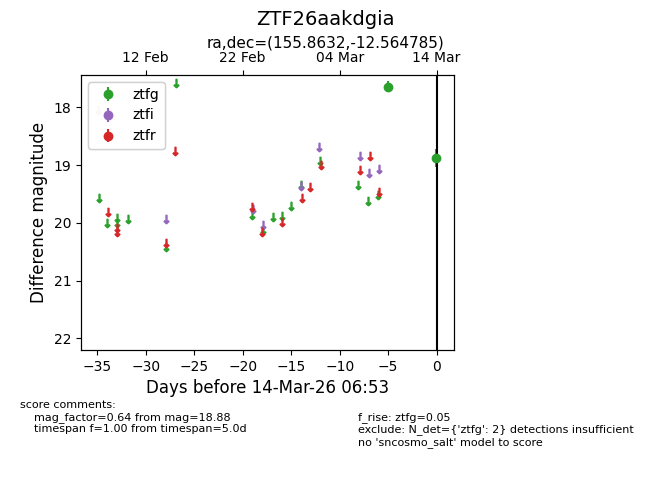
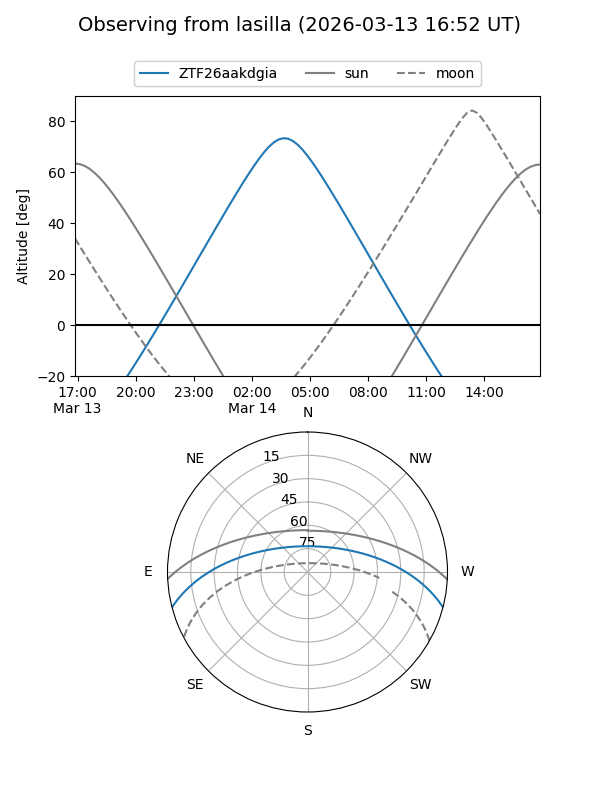
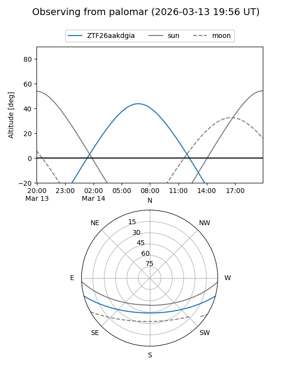

ZTF26aakdgia
Target ZTF26aakdgia at 2026-03-14 06:54
Aliases and brokers:
FINK: link
Lasair: link
ALeRCE: link
alt names
ZTF26aakdgia (ztf,fink_ztf)
Coordinates:
equatorial (ra, dec) = 155.8632,-12.56479
equatorial (HMS+DMS) = 10:23:27.17,-12:33:53.23
galactic (l, b) = (256.0027,+36.48348)
Flags:
Photometry:
last ztfg=18.88
2 ztfg detections
Lightcurve

Visibility


Additional plots